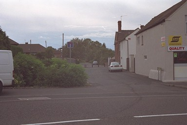

 The name of Canal Side attracted my attention several years ago, but I didn't follow it up at the time. It represents he beginning of a half-mile section which is one of the few certainties in this area.